Main’deki 366 görsel dosyası tarandı; 18 tasarım adayı yeniden üretildi. Bu sayfada Monki içeren sahnelerdeki öncelikli üslup farkları ve yeni çizimler karşılaştırılıyor. Canlı site değiştirilmedi.
17 yeni illüstrasyon + el sallama animasyonu için 1 statik ana kare. Kaynaklar beyaz zeminlidir; son temizlik ve uygulama boyutlandırması entegrasyon aşamasındadır. Animasyonun mevcut dosyası statik PNG ile değiştirilmemeli.
Boş bahçe
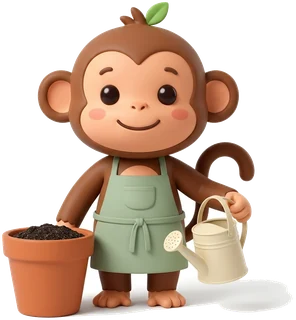
Main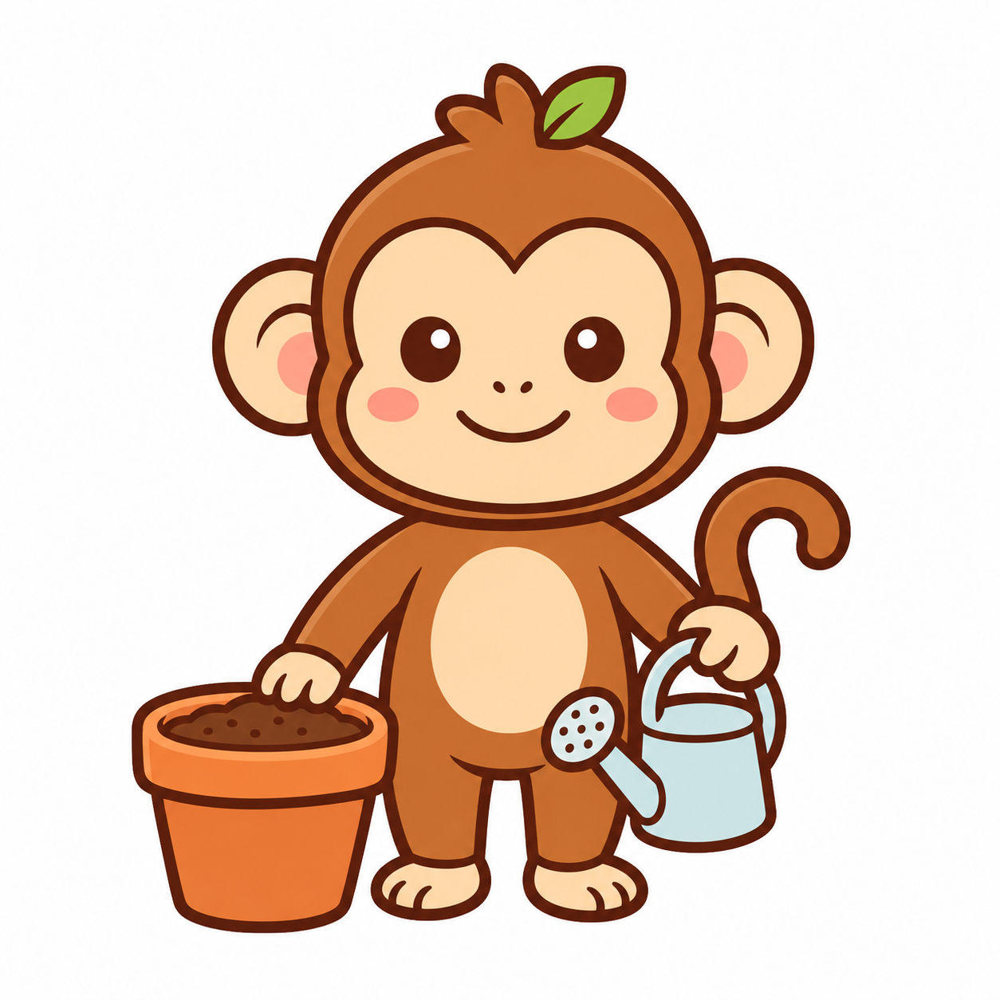
Öneri3B oyuncak görünümü, önlük ve gerçekçi ışık ana çizim ailesinden ayrılıyor.
empty-gardenPNG kaynakİlk filiz
MainÖneri
3B karakter ve parlayan parçacıklar; ana Monki konturuyla uyuşmuyor.
milestone-sproutPNG kaynakKitap tarama
Sarı gövde, başta çift filiz ve küçük harf kümeleri karakteri değiştiriyor.
monki-scannerPNG kaynakKarşılama
Sarı gövde, farklı yüz oranları ve harfli kitap mevcut karakter ailesinden uzak.
onb-welcomePNG kaynakGünlük yazma
MainÖneri
Altın sarı karakter ve çok küçük sayfa detayları.
scene-journalPNG kaynakKütüphane
Sarı karakter, farklı gövde oranı ve ayrıntılı raf kompozisyonu.
scene-libraryPNG kaynakArama sonucu yok
Sarı karakter, büyüteçte iri göz ve yoğun küçük simgeler.
scene-search-emptyPNG kaynakCümle kartları
Sarı gövde ve kartların üstündeki yazılar küçük ölçekte tutarsız.
scene-sentencesPNG kaynakA1 · İlk adım
MainÖneri
Tek başına kullanılabilir; altılı CEFR ailesinde ortak oranları kurmak için yeniden çizildi.
cefr-monki-a1PNG kaynakA2 · Keşif
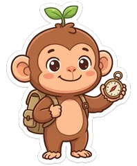
Main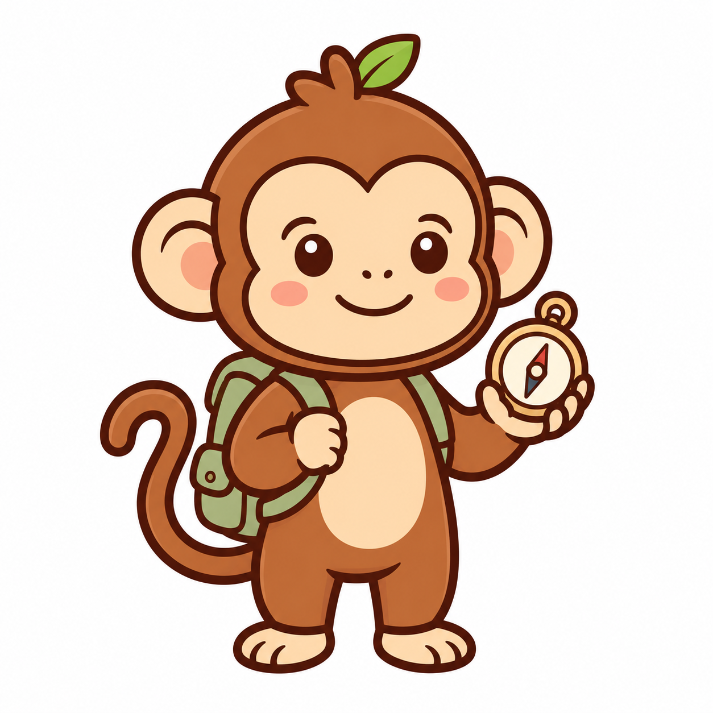
ÖneriBaşta çift filiz, açık kahve gövde ve beyaz çıkartma kenarı.
cefr-monki-a2PNG kaynakB1 · İletişim
MainÖneri
Tek başına kullanılabilir; diğer seviyelerle oran ve kontur eşleşmesi için yenilendi.
cefr-monki-b1PNG kaynakB2 · Bağımsız okur
MainÖneri
Farklı yüz/gövde oranı, başta çift filiz ve zemin gölgesi.
cefr-monki-b2PNG kaynakC1 · İleri düzey
MainÖneri
Kitap sırtlarında yazı ve farklı aksesuar ağırlığı; aileyi sadeleştirme adayı.
cefr-monki-c1PNG kaynakC2 · Ustalık
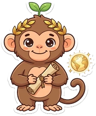
Main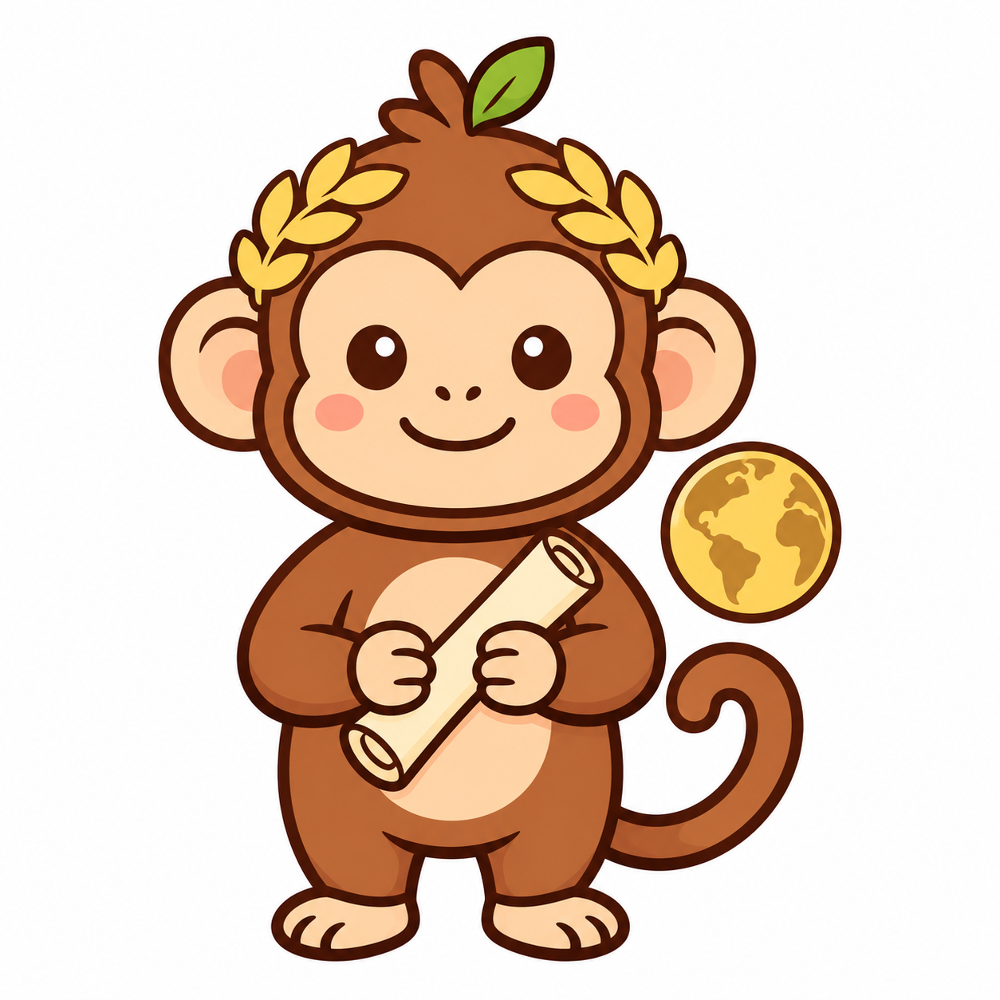
ÖneriTüylü uzuvlar ve çift filiz; daha gerçekçi karakter oranları.
cefr-monki-c2PNG kaynakYağmur
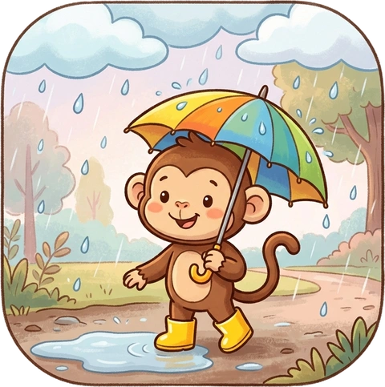
Main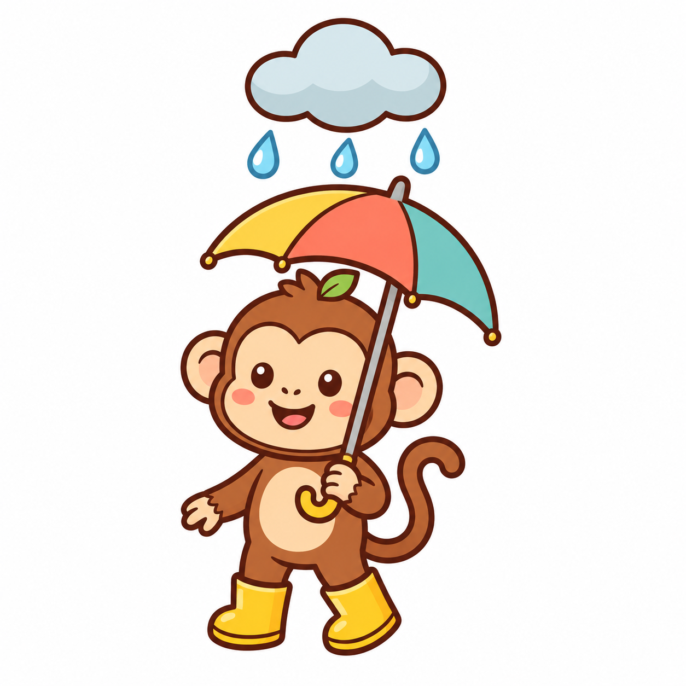
ÖneriDetaylı manzara, çerçeve ve resim dokusu küçük başlıkta Monki’yi geri plana atıyor.
weather-rainPNG kaynakKar
MainÖneri
Dokulu kar/orman arka planı ve çok küçük ayrıntılar.
weather-snowPNG kaynakFırtına
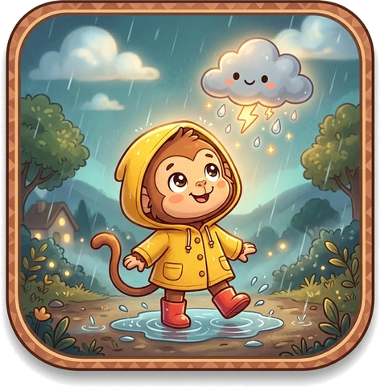
Main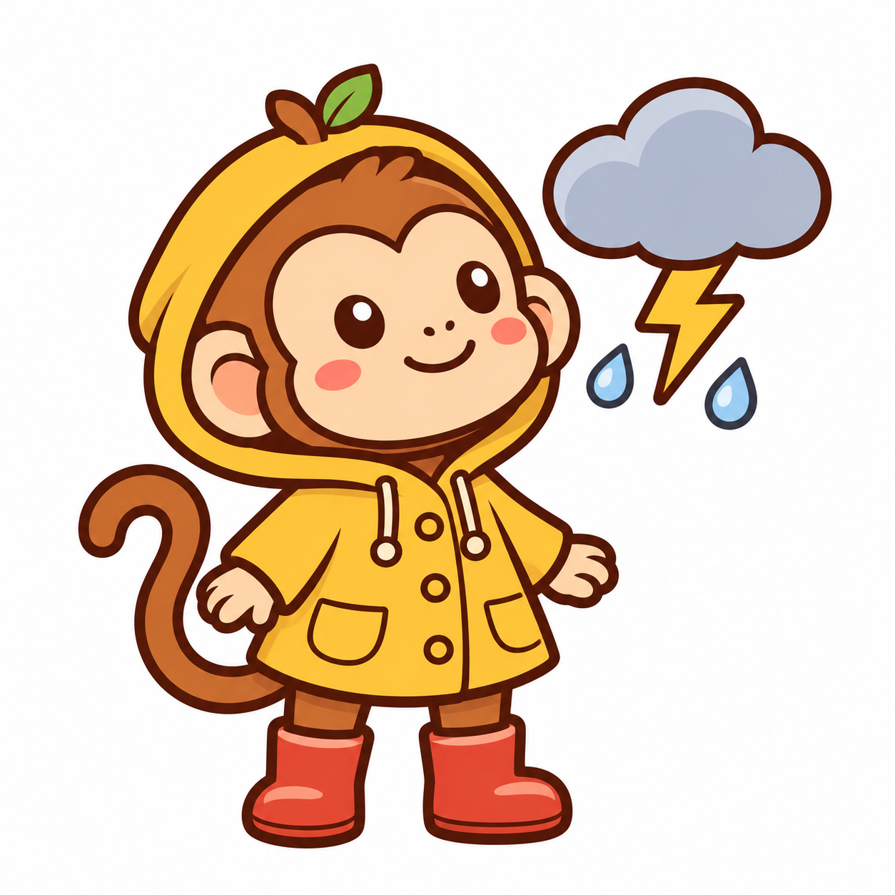
ÖneriBoyama tarzı gece manzarası, ışık ve kalabalık çerçeve ana karakter dilinden farklı.
weather-thunderPNG kaynakEl sallama · ana kare
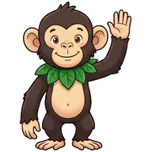
MainÖneri · statik ana kareGerçekçi siyah tüylü şempanze, uzun uzuvlar ve yaprak yakalık farklı bir karakter gibi.
monki-animated-wavePNG kaynak